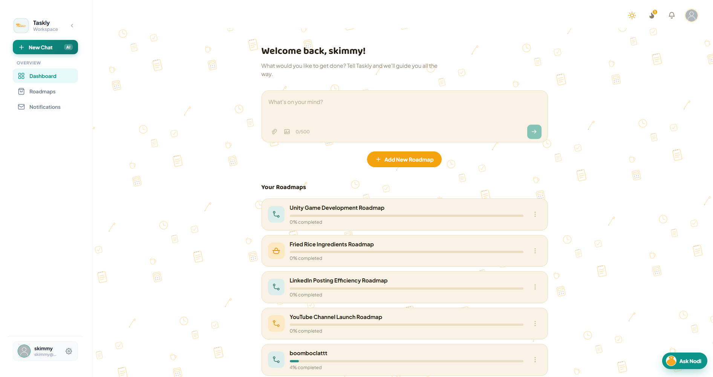
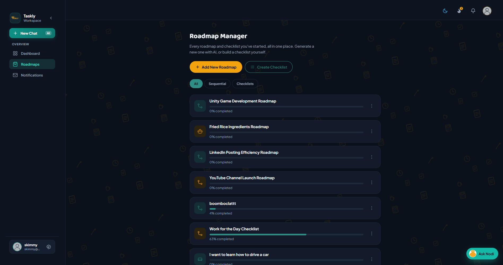
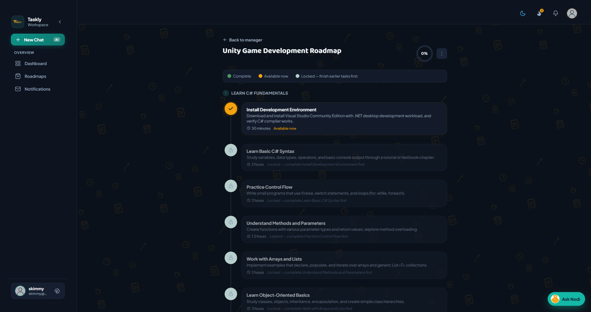
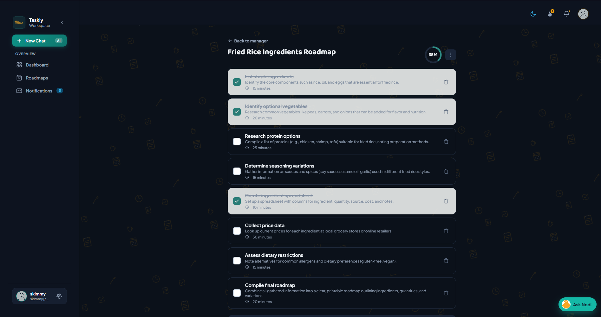
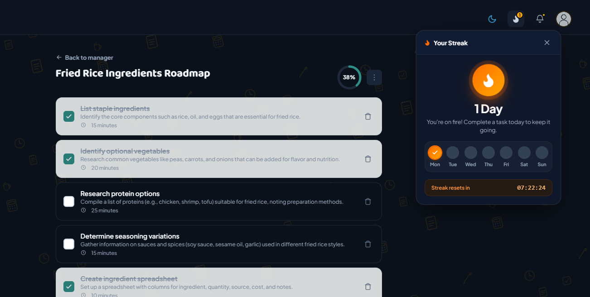
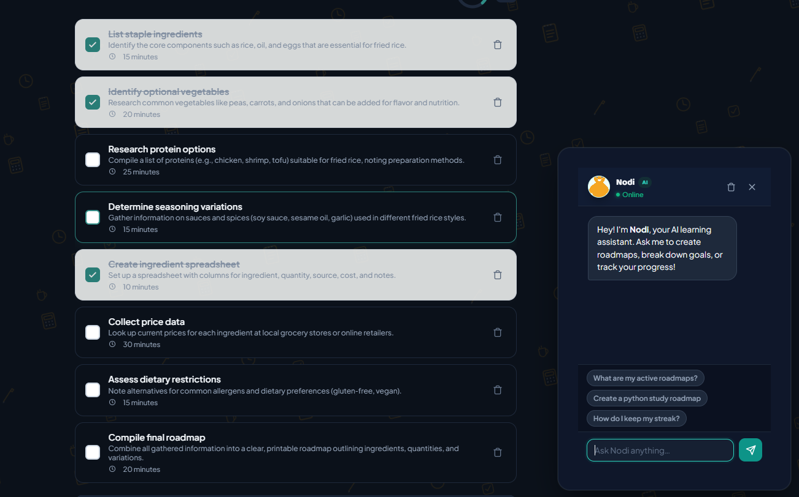

Where every TASK drives
real daily PROGRESS
Taskly gives students and high-achievers an intuitive way to manage tasks, master academic roadmaps, and stay accountable with streaks — with the tools to see it through.
Taskly turns "everyone is overwhelmed" into a clear plan you actually finish.
No more scattered reminders or missed assignments. From daily check-ins to multi-month roadmaps, Taskly organizes your momentum so you can focus on mastering what matters.
Start Tracking Free
Real Structure.
Real Results.
Smart Task Organization
Organize assignments, exams, and daily priorities with custom tags, categories, and reminders.
Master Visual Roadmaps
Break complex courses and semester goals into clear, visual milestones you can track step by step.
Streaks & AI Assistant Nodi
Build unbreakable daily study habits, maintain your streak, and chat with Nodi when you need direction.

Track
Watch it move. Every task, milestone, and roadmap carries a live status, so you always know where things stand.
Built for total focus & clarity
Explore every feature designed to keep your academic workload completely under control.
Live Workspace
Get a glance at urgent tasks, current courses, and daily productivity breakdown.
Interactive Timeline
Organize academic semesters into clear multi-step milestones with visual progress bars.
Task Breakdown
Filter by course, set high-priority flags, and mark items done in seconds.

04. StudioRoadmap Manager
Create new paths, connect learning resources, and manage multiple course tracks.

05. StreaksDaily Streaks
Build positive habits with streak meters and instant notifications for upcoming deadlines.

06. AI CompanionNodi Assistant
Ask questions, get smart schedule advice, and organize study sessions with AI.

07. ProgressGoal Completion
Celebrate milestones, view historical stats, and maintain peak semester momentum.

08. PreferencesPersonalized Space
Dark/light themes, offline PWA access, and customized alerts suited to your schedule.
I believe Taskly has to be one of the most impactful tools I've used throughout my academic journey. Moving from chaotic sticky notes to structured roadmaps changed everything.
Frequently Asked Questions
Everything you need to know about getting started with Taskly.
Yes! Taskly is completely free for individual students and creators. You can create unlimited tasks, track roadmaps, and maintain daily streaks with no hidden paywalls.
Roadmaps allow you to outline large goals—like completing a 12-week course or finishing a final year thesis—into progressive milestones. As you complete each stage, your roadmap automatically updates your completion rate.
Absolutely. Taskly is built as a Progressive Web App (PWA). You can install it straight to your home screen or desktop and access your tasks even without an active internet connection.
Nodi is your friendly AI productivity companion inside Taskly. Nodi provides instant motivation, tips on prioritizing backlog tasks, and quick breakdowns when you feel stuck.
Ready to take control of your time?
Join students and achievers transforming their daily routines with Taskly.